🌍 世界 · 设定集精选
场景 · 设定集精选
阿伦黛尔的街巷、城堡与荒野森林的原书概念画
F1·F2
主电影
中/英
双语
🏰 阿伦黛尔城镇

David Womersley 的阿伦黛尔概念图
David Womersley 绘制同一阿伦黛尔村落的两种时刻——金色晨昏与深蓝月夜，氛围迥异；Giaimo 称赞其"推进设计却不逾出可信世界"，是昼夜配色与村落氛围参考。（F1设定集原页）
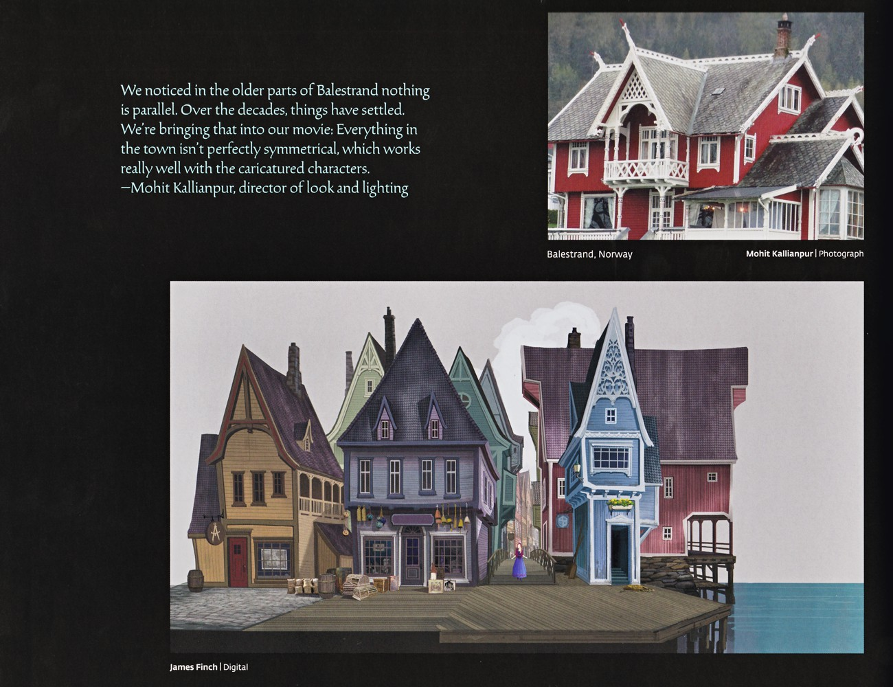
巴拉斯川的斜屋与阿伦黛尔水岸
Mohit Kallianpur 指出巴拉斯川老建筑因年代沉降而"无一平行"，电影据此让小镇不完全对称，与卡通化角色契合；页面配挪威红木屋照片与 Finch 绘制的陡坡尖顶彩色水岸建筑。（F1设定集原页）
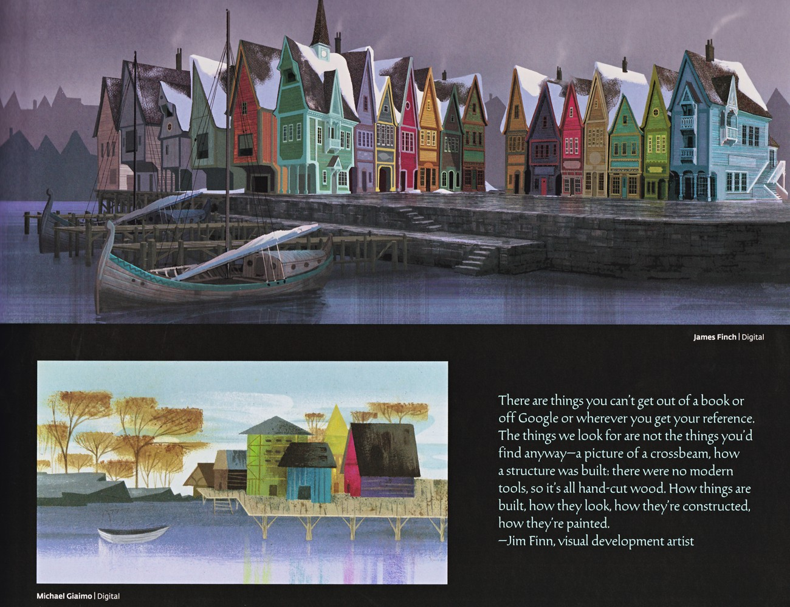
阿伦黛尔雪港与湖畔村落
Jim Finn 强调书与网络无法替代的实地结构参考（横梁、手工木构、涂绘）；页面含 Finch 绘制的彩色木屋雪港与 Giaimo 绘制的秋树桩脚湖畔村落。（F1设定集原页）
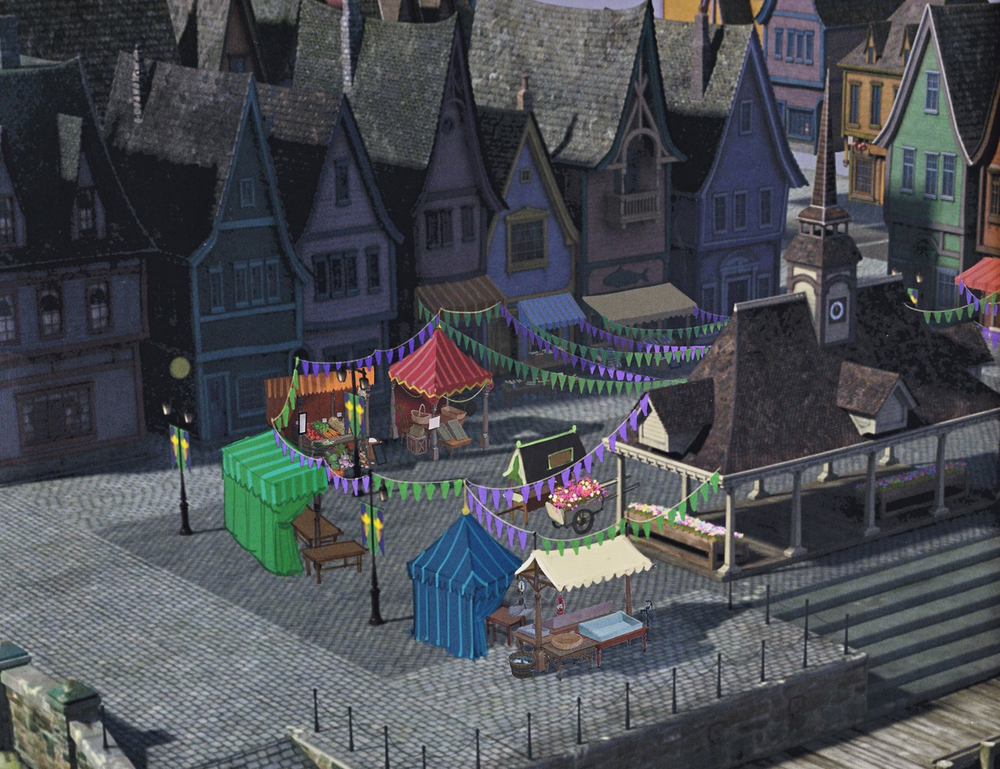
阿伦黛尔村庄广场鸟瞰
本页为纯概念图，展示加冕日村庄广场的整体布局：集市帐篷、紫绿相间的三角旗（pennant banners），为 p028「加冕」章节的节庆氛围定调。（F1设定集原页）
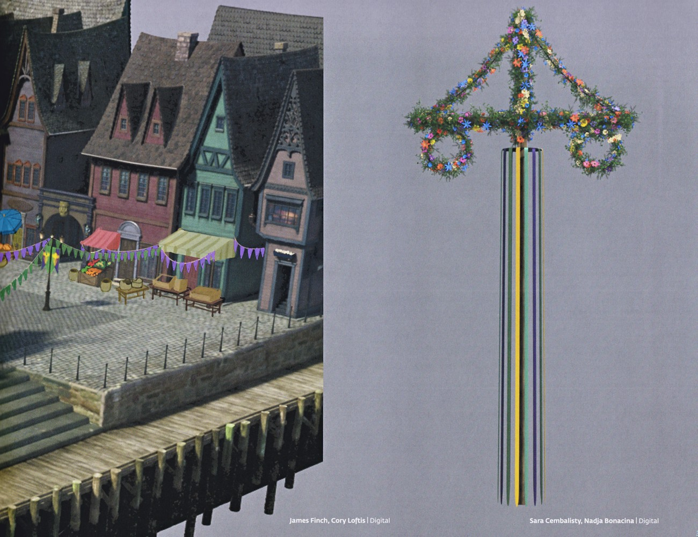
水滨与五月柱细节
两幅数字渲染分别展示阿伦黛尔水滨（商店遮阳棚与节庆彩带）与装饰花环、条纹飘带的五月柱（maypole），体现北欧节庆元素。（F1设定集原页）

阿伦黛尔教堂平面图与龙风格
给出阿伦黛尔教堂的剖面/平面图与正背侧立面数字图，并说明村庄采用「dragonstil（龙风格）」建筑——19世纪末将维多利亚美学与挪威乡土设计融合的怀旧风格。（F1设定集原页）
🏯 城堡内部
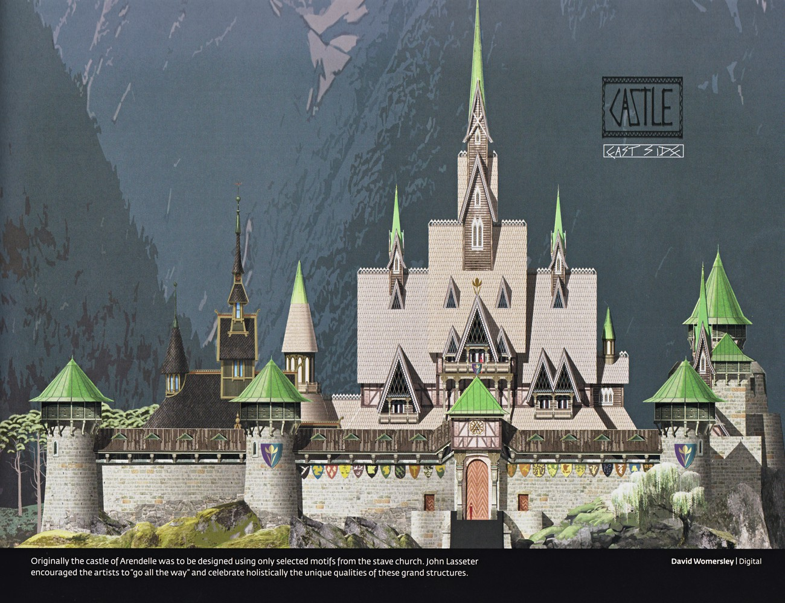
城堡东侧面
城堡东侧数字画，绿色锥顶与源自木板教堂的尖塔衬以山景。原文说明城堡最初只取木板教堂的部分母题，Lasseter 鼓励「做到底」，整体颂扬这些宏伟建筑。（F1设定集原页）

大厅壁炉与 Anna、Hans
Anna 与 Hans 立于绘有阿伦黛尔王室挂毯的大壁炉前；制作人 Del Vecho 引述称赞美术指导 Giaimo 以角色为出发、将环境/角色/服装视为一体的整体思维。（F1设定集原页）

餐厅大厅
华丽餐厅大厅（长桌、肖像、花纹壁纸、大壁炉）；环境建模主管 Krummel 引述称赞 Giaimo、Womersley、Keene 三人虽偶有分歧但总能达成共识。（F1设定集原页）
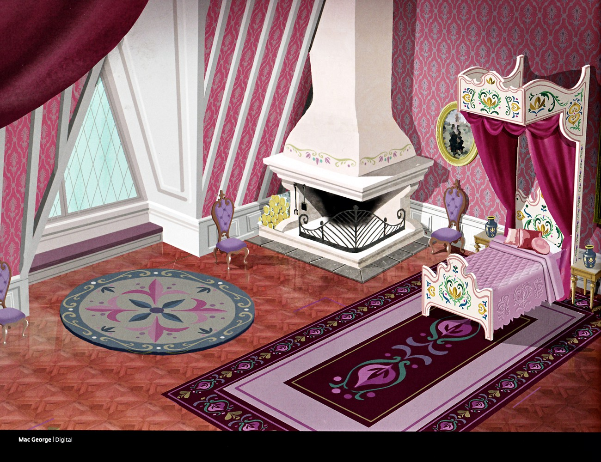
Anna 卧室
Anna 卧室数字渲染，粉色花纹壁纸、白色华盖床、壁炉与装饰地毯，体现其居所的甜美色调。（F1设定集原页）
🧭 纹章与道具

王国图形设计
阿伦黛尔王国图形设计合集：加冕图形、皇家标准旗、侧像旗、盾徽、艾莎王冠旗、彩旗、国旗、艾莎王族旗，均以绿紫底上的黄色番红花/花形母题呈现；下排另有深色盾徽、金质奖章与红披风。（F1设定集原页）
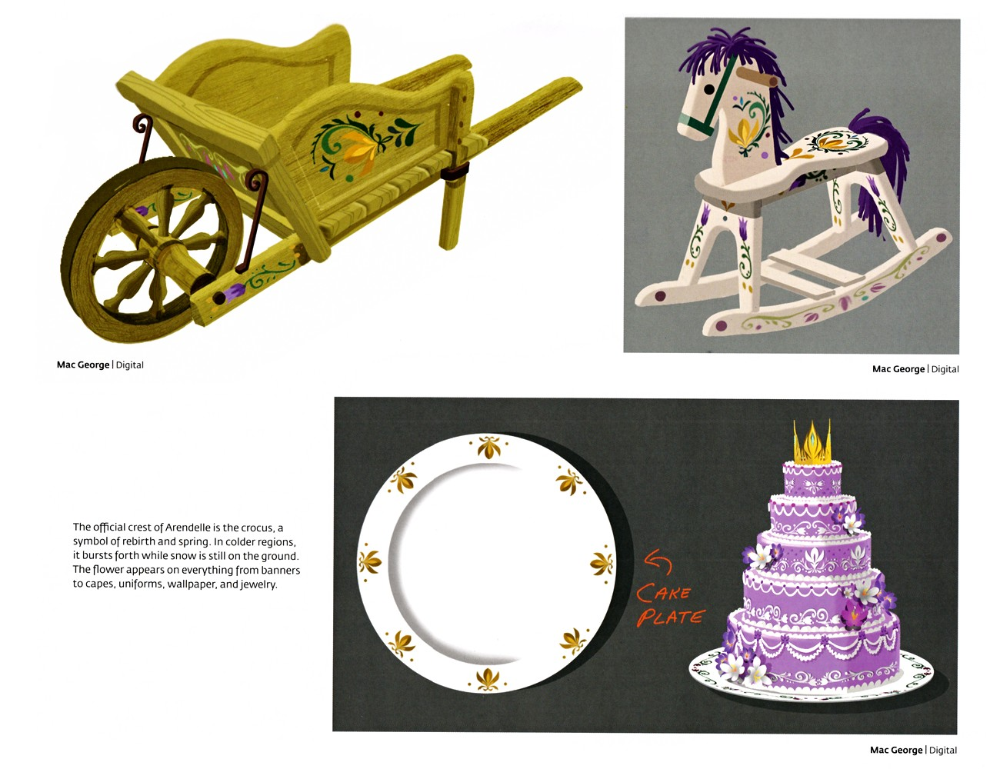
道具设计与番红花徽记
三件道具设计：民俗花卉彩绘木手推车、紫鬃白摇马、金番红花白盘配多层紫蛋糕（手写注「CAKE PLATE」）。正文点明阿伦黛尔官方纹章为番红花（crocus），象征重生与春天，雪未消即绽放，出现在旗帜、斗篷、制服、壁纸与首饰上。（F1设定集原页）
🏔️ 荒野、森林与北境
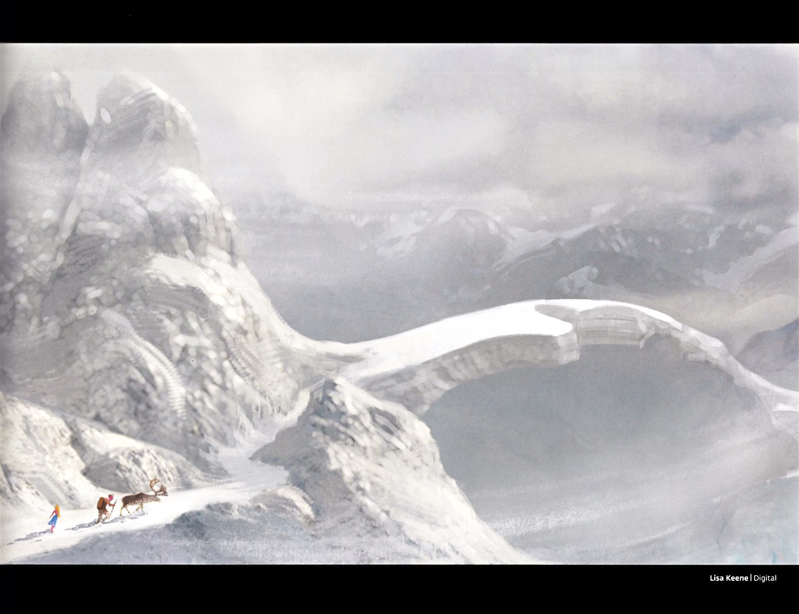
雪山荒野全景图
一幅阴云下锯齿状雪山的全景画：左下角极小的安娜（蓝裙）与克斯托夫（带驯鹿斯文）沿雪径前行，被高耸山峰与右侧巨大雪堤反衬得渺小，呼应前文"以尺度营造孤独感"的设计意图。艺术家 Lisa Keene 数字绘制。（F1设定集原页）

荒野树木风格化设计
页面展示荒野中四种风格化树木方案：左上深紫背景下的覆雪松、右上青色背景中更抽象"魔法"感的树、左下由黑色剪影到覆雪松再到绿松的设计演变序列，以及右下暮蓝背景中的高瘦覆雪冷杉。整体强调雪层、轮廓造型与色彩在风格化自然中的运用。（F1设定集原页）
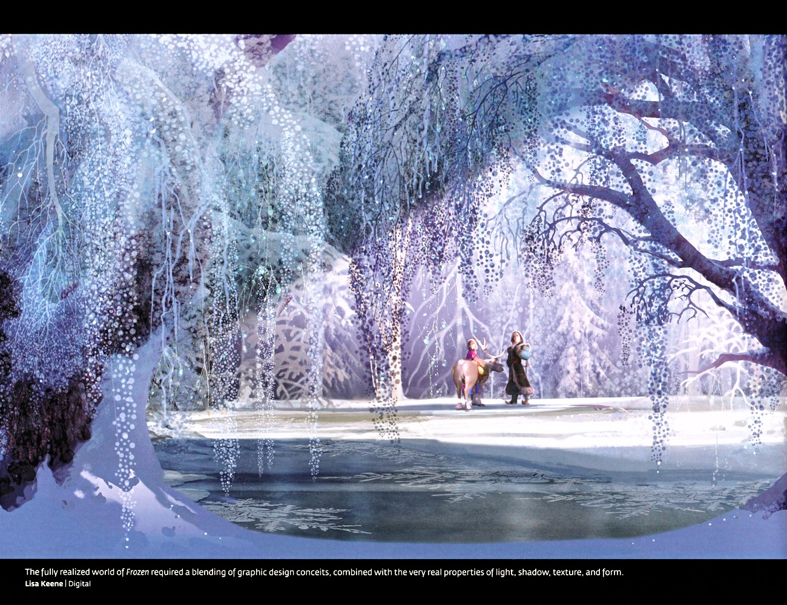
冰冻森林全景
宽幅冰冻森林画作：覆雪树垂挂水晶般冰柱探入冰湖，枝叶覆满精细雪花纹样；中景处穿蓝裙的安娜与克里斯托夫、驯鹿斯文踏雪而行。说明完整的冰雪世界需将图形设计手法与真实的光影、质感、形态相结合。（F1设定集原页）
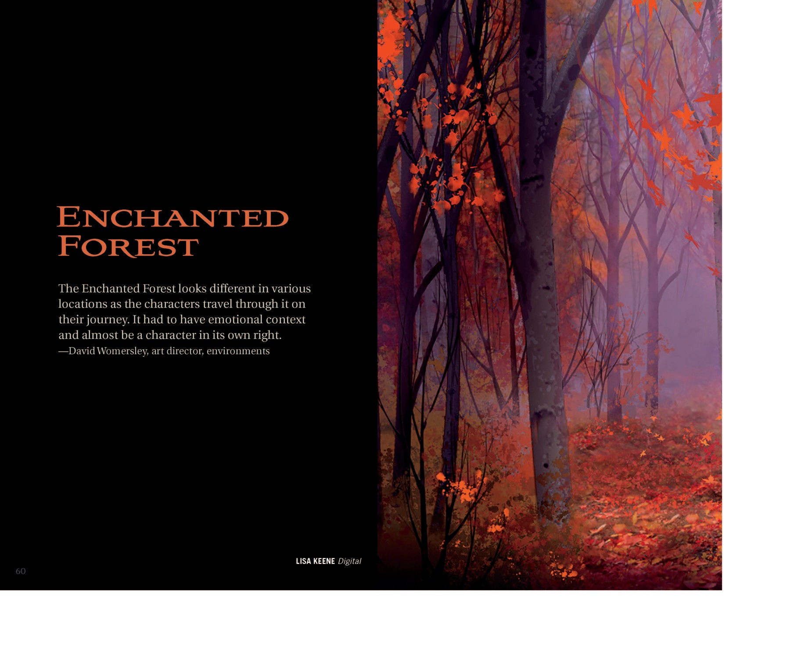
Enchanted Forest（魔法森林）章节扉页
魔法森林在不同地点呈现不同样貌，必须具备情绪语境，几乎成为角色本身。（F2设定集原页）
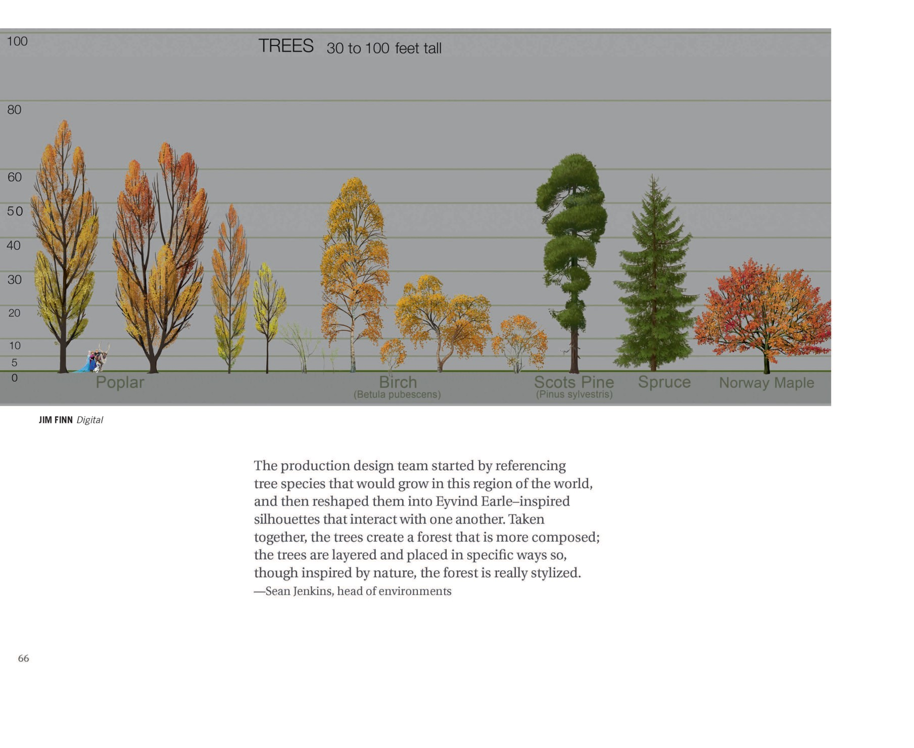
Enchanted Forest 章节（树种参考）
制作设计团队首先参考该地理区域的真实树种（杨/桦/苏格兰松/云杉/挪威槭），再将其重塑为 Eyvind Earle 风格的剪影；树木分层摆放以构成"更组合化"的森林——虽取材自然，实则高度风格化。（F2设定集原页）

Northuldra 章节标题/概念图
"Northuldra" 章节标题页。展示服装早期探索——立领头巾、与头发配合的头巾形态、顶视图、下巴护板与边缘流苏等设计要点。下方五位角色展示不同性别/风格的服装版本。署名 Jean Gillmore。（F2设定集原页）
💡 图注说明
本页全部图版来自《The Art of Frozen》与《The Art of Frozen II》官方设定集原书扫描，图注经原书逐页笔记核对。
📌 本页要点
你正在阅读《世界》卷的「场景 · 设定集精选」。本页由电影正典、官方设定集与官方小说综合梳理，可作为该主题的速查入口；右侧目录可快速跳转到本页各小节。